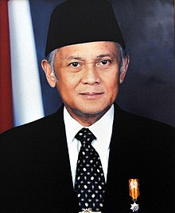

Prof. Dr.-Ing. Ir. H. Bacharuddin Jusuf Habibie, FREng.[1] (25 Juni 1936 – 11 September 2019)[2][a] adalah Presiden Republik Indonesia yang ketiga. Sebelumnya, B.J. Habibie menjabat sebagai Wakil Presiden Republik Indonesia ke-7, menggantikan Try Sutrisno. B. J. Habibie menggantikan Soeharto yang mengundurkan diri dari jabatan presiden pada tanggal 21 Mei 1998.[3][4] Sebelum memasuki dunia politik, Habibie dikenal luas sebagai seorang profesor dan ilmuwan dalam teknologi aviasi internasional dan satu-satunya presiden Indonesia hingga saat ini yang berlatarbelakang teknokrat. B.J. Habibie kemudian digantikan oleh Abdurrahman Wahid[5] (Gus Dur) yang terpilih sebagai presiden pada 20 Oktober 1999 oleh MPR hasil Pemilu 1999. Dengan menjabat selama 2 bulan dan 7 hari (sebagai wakil presiden) dan juga selama 1 tahun dan 5 bulan (sebagai presiden), B. J. Habibie merupakan Wakil Presiden dan juga Presiden Indonesia dengan masa jabatan terpendek.[6] B. J. Habibie merupakan presiden Indonesia pertama yang terlahir di luar Jawa dan berasal dari etnis Gorontalo, Sulawesi[7][8] dari garis keturunan ayahnya yang berasal dari Kabila, Gorontalo dan etnis Jawa dari ibunya yang berasal dari Yogyakarta.[9] Saat ini, Pemerintah Provinsi Gorontalo telah membangun Monumen B.J. Habibie di depan pintu gerbang utama Bandar Udara Djalaluddin, di Kabupaten Gorontalo.[10][11] Selain itu, masyarakat Provinsi Gorontalo pun sempat mengusulkan nama B.J. Habibie digunakan sebagai nama universitas negeri setempat, menggantikan nama Universitas Negeri Gorontalo yang masih digunakan. |  |